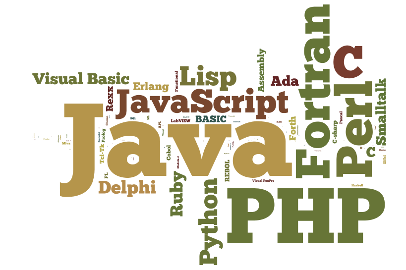

How Webpages are built, animated and made dynamic?
By Tamer Khraisha
For most people, a webpage is what a browser shows when we digit a domain name in it. However, for web developers the word webpage refers to a computer file, usually written in one or more programming languages, that executes a set of coded instructions.
For this reason, to understand how web developers construct webpages the first thing to keep in mind is that a webpage is a set of code lines. In a blog article, Ben McCormick wrote that one of the most importants questions that could be asked during an web development job interview is "How does the internet work ?"
The standard markup language for creating Web pages is HTML. HTML stands for Hyper Text Markup Language. Almost every webpage you look at is written in HTML. HTML describes the structure of Web pages using markup, thus we can think of HTML as the skeleton that
gives every webpage structure. A markup language is a programming language used to make text do more than just sit on a page: it can turn text into images,
links, lists and much more. The current version of HTML is HTML5 which has better advantages in terms of syntax, performance, advanced elements, new types of flow controls and so on. If the HTML page simply reads something like this: <!DOCTYPE html>, it's
using HTML5.
After learning HTML, one might ask the question: what makes webpages pretty? Here comes the role of CSS. CSS (which stands for Cascading Style Sheet ) is a language used to describe the appearance and formatting of the HTML pages. The current version of CSS is
CSS3. CSS3 is completely backwards-compatible with earlier versions of CSS. With CSS3 ,new animation features and text design tools like background, borders, selectors were added. See more here
.
Now that we now how websites are structured, one might ask why webpages are most of the time dynamic and interactive with things that appear and disappear, sections that move around and colors that change while we navigate the webpage. The language that
adds these effects is called JavaScript. JavaScript not only enables you to add powerful interactions to websites, but is also the foundation of a lot of commonly used libraries (like jQuery) and frameworks (like AngularJS, ReactJS and NodeJS).
Whenever a code is included within a tag of the form <script>, it's a JavaScript code. JavaScript is an object-oriented programming language, meaning that it is based on the idea of encapsulating state and operations inside objects and it supports inheritance
and prototyping. JavaScript, like HTML and CSS, is also called a client-side language, meaning that it is a language that runs on a client. A client (usually the browser) is a word used to indicate the party that requests pages from the Server,
and displays them to the user. A server is the place where the files of a webpage are stored. When web-developers are specialized in client-side programming they usually call themselves front-end web developers, while as we will see in the next paragraph,
developers who specialize in the server-side programming languages are usually called back-end web developers .
In addition to making our website pretty and animated, we might want our website to do more specific roles, like performing mathematical operations, storing the comments in a blog, letting users create their accounts, creating a contact section and other
advanced functions. In this case web developers usually use the so called server-side programming languages. PHP is one of the simplest server-side languages out there, and it was designed primarily for web development. There is a large number of sites
currently built with Wordpress, a content management system (CMS) built with PHP. Among the most useful uses of PHP it to perform mathematical calculations. Another major use is to collect user information and interact with SQL databases .Imagine you want
to build a website like Facebook, where users can create their account and log in and off at any time, where are these data stored? The answer is in a database. However, to let the website interact with the database, for example to retrieve your profile
information when you log in, PHP queries the database, finds your data and then sends it to your browser. This is the idea of server-side language. While with the client-side the script is run directly in the user's browser, in the server-side environment
scripts are run in a web server. A user's request is fulfilled by running a script directly on the web server to generate dynamic HTML pages. This HTML is then sent to the client browser. It is usually used to provide interactive web sites that interface
to databases or other data stores on the server .
An important thing to pay attention to when constructing a website is to ensure that a website remain legible and visually appealing across a variety of devices that can have
different sizes and resolutions. To resolve this problem, programmers usually use responsive design techniques .
More on web servers
The term web server can refer to one of two things. The first is the computers that are usually set up in facilities called Data Centers, and operated by hosting companies. The purpose of these computers is to store websites so that people can visit them on the internet. The files stored on web servers are read by browsers (such as Chrome, Internet Explorer or Safari) which convert these files into images and text for you to view. Your browser communicates with web servers to bring you information from the internet. Web servers typically run two types of operating systems - Linux or Windows. Most web servers today operate Linux. Servers with Linux and Windows installed on them also run other key software programs which are also called web servers. All computers that host Web sites must have Web server programs. These software programs are run in the background. Examples of software web servers are
- HTTP Server (Hyper Text Transfer Protocol ) - sends website files to users, in response to their request, which are forwarded by their computer's HTTP clients (Browsers)
- FTP Server - allows for uploading files (Files Transfer Protocol)
- Email Server - gathers and directs emails
- Database Server - stores information defined in fields, essential to the operation of the website itself. For example, an eCommerce site needs to keep track of names, addresses, product information and so on.
Leading Web servers include Apache (the most widely-installed Web server), Microsoft's Internet Information Server (IIS) and nginx (pronounced engine X) from NGNIX. Other Web servers include Novell's NetWare server, Google Web Server (GWS) and IBM's family of Domino servers.
To read more on web servers, see here and here